Covan Labs / Selected H1 master
The unchanged H1 benchmark and two polish alternatives.
Compare at 256, 128 and 64px, then test both navbar spacings.




Polish A refines the confluence curves while preserving H1’s silhouette and aqua area. Polish B adds a small lower-tip reduction and an upward confluence adjustment. Both keep H1’s tall, open proportions.
The second lockup adds 2px between the mark and wordmark. All type remains Inter 600 / 425 at the same size. No favicon optimization is included.
Selected H1 reference ↗